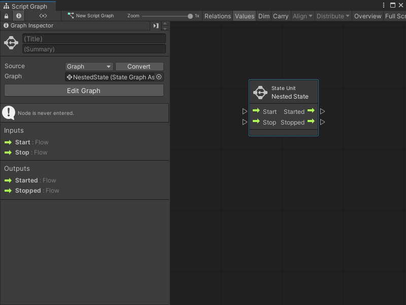

Add a State Unit to a Script Graph¶
Add a State Unit to a Script Graph to trigger a change of state. A state is any set of behaviors that you want a GameObject to perform. For more information on state in Visual Scripting, see Graphs.
You can add a new State Graph to a State Unit node, or use an existing State Graph from the project. For more information on the State Unit node, see State Unit node.
Add a new State Graph as a State Unit node¶
To add a new blank State Graph as a State Unit node to a Script Graph:
[!include[with-graph-open-ff](./snippets/vs-with-graph-open-ff.md)]
Go to Nesting.
Select State Unit to add a State Unit node to the graph.
Open the Graph Inspector.
In the Graph Inspector, choose the source for the State Unit:
Embed: The State Graph only exists on the State Unit node. You can only change the State Graph from the node in its parent graph.
Graph: The State Graph exists in a separate file. You can change the State Graph outside of its parent graph and reuse the graph in other areas of an application.
If you chose Graph:
In the Graph Inspector, select New.
Enter a name for the graph file.
Choose where you want to save the graph file in the project.
Select Save.

Add an existing State Graph as a State Unit node¶
To add an existing State Graph file as a State Unit node in a Script Graph:
[!includewith-graph-open-ff]
Go to Nesting.
Select State Unit to add a State Unit node to the graph.
Open the Graph Inspector.
In the Graph Inspector, set the Source to Graph.
Do one of the following:
In the Graph field, select the object picker (circle icon) and choose a compatible State Graph from the project.
Click and drag a State Graph file from the Project window and release on the Graph field.
[!TIP] For a faster way to add a State Graph as a State Unit node:
Click and drag a State Graph asset from the Project window into the Graph Editor to automatically create a State Unit node.
Right-click to open the fuzzy finder. Go to Graphs and select a graph file.

Next steps¶
Select Edit Graph in the Graph Inspector to edit the graph. For more information on how to create a State Graph, see Develop logic transitions with State Graphs.